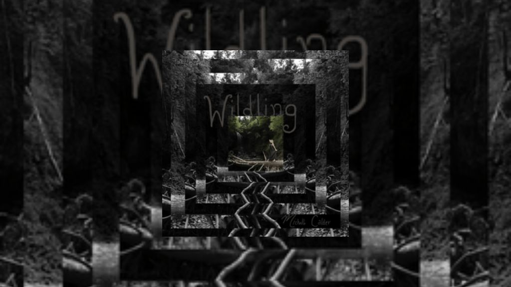

Michelle – “Breathe (Acoustic)”

Track eight from Michelle’s Wildling LP, “Breathe (Acoustic)” offers a tender and reflective counterpart to the more upbeat version of “Breathe,” found earlier on the record. This stripped-back rendition evokes the serenity of a quiet seaside afternoon, the very setting in which the song was originally conceived.
Somber, soft, and deeply heartfelt, the track invites listeners into a moment of stillness and introspection. Its structure mirrors the ebb and flow of the ocean, weaving together real field recordings from Nova Scotia’s Minas Basin, waves, wind, and distant breaths, to create an intimate soundscape that blurs the line between music and meditation.
Written during a reflective afternoon spent by the water, “Breathe (Acoustic)” captures the peaceful rhythm of nature and the simple act of being present. It’s both a sonic painting and a personal meditation, encouraging listeners to find their own seaside moment, take a deep breath, and just be.
Follow Our Playlist For More Music!
This dispatch was last updated on November 1, 2025